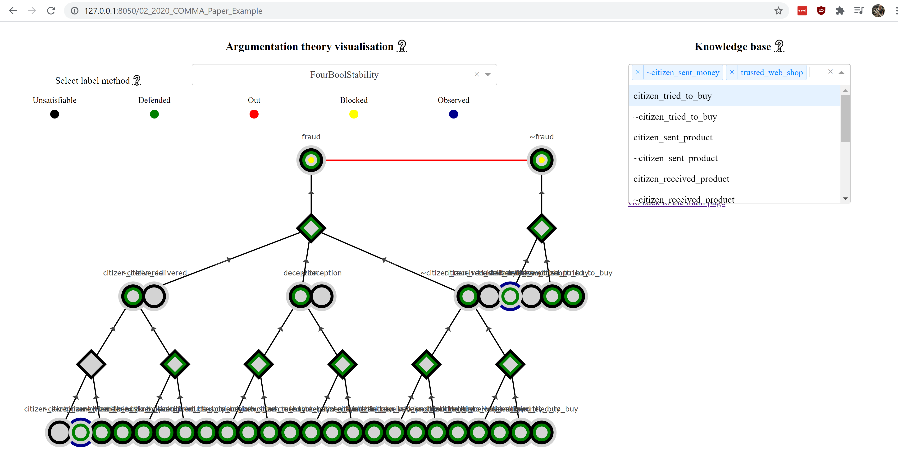

Visualisation of Labelling Algorithms¶
In order to see how the labelling algorithms work, you can run the visualisation, by running stability_label_algorithm / visualisation_interface / app.py.
Then browse to http://127.0.0.1:8050/.
You should see something like:

Choose an argumentation theory from this menu. Then the chosen argumentation theory is visualised, like in the image below. You can select a labeler, change the argumentation theory by adding elements to the knowledge base and changing the view of the figure by selecting a different topic.
